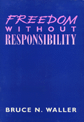

<body bgcolor="#FFFFFF" text="#000000" link="#0000FF" vlink="#CC0000" alink="#CC0000"><center><hr width="350" size="1" align="center" noshade>A fresh perspective on the controversial set of questions surrounding determinism, naturalism, freedom, and responsibility<hr width="350" size="1" align="center" noshade><p><a href="https://cdcshoppingcart.uchicago.edu/Cart/ChicagoBook.aspx?ISBN=9780877227175&&PRESS=temple" target="_top">Buy this book!</a> | <a href="https://cdcshoppingcart.uchicago.edu/Cart/Cart.aspx?PRESS=temple" target="_top">View Cart</a> | <a href="https://cdcshoppingcart.uchicago.edu/Cart/Cart.aspx?PRESS=temple" target="_top">Check Out</a></p><p></p></center><!--none//--><h1>Freedom Without Responsibility</h1>
<h3>Bruce N. Waller</h3>
<P>cloth 0-87722-717-9 $54.50, Sep 90, <FONT COLOR=#990033>Out of Stock Unavailable</FONT>
<br>Electronic Book 1-59213-176-X $.00 <FONT COLOR=#990033>Out of Stock Unavailable</FONT>
<BR> 256 pp
</P><BLOCKQUOTE><I>"What I like most about this book is that it attacks two received positions. One, that a host of other judgments require the retention of moral responsibility The other, that moral responsibility is the best or only game in town when it comes to achieving various social goals. Received opinions are always in need of energetic attack, and the attacks here are both energetic and well written."</I>
<br>&#151<b>Jeffrey Olen</b>, author of <I>Moral Freedom</I>, former Professor of Philosophy, University of Wisconsin, Stevens Point<I></I></BLOCKQUOTE>
<p>In this book, Bruce Waller attacks two prevalent philosophical beliefs. First, he argues that moral responsibility must be rejected; there is no room for such a notion within our naturalist framework. Second, he denies the common assumption that moral responsibility is inseparably linked with individual freedom. Rejection of moral responsibility does not entail the demise of individual freedom; instead, individual freedom is enhanced by the rejection of moral responsibility. According to this theory of "no-fault naturalism," no one deserves either blame or reward.
<p>In the course of arguing against moral responsibility, Waller critiques major compatibilist arguments&#151by Dennett, Frankfurt, Strawson, Bennett, Wolf, Hampshire, Glover, Rachels, Sher, and others. In addition, the implications of denying moral responsibility&#151for individual freedom, for moral judgments and moral behavior, and for social justice&#151are examined; the supposed dire consequences of the denial of moral responsibility are challenged; and the benefits of denying moral responsibility are described.
<BR>&nbsp;<H2>About the Author(s)</H2>
<P><b>Bruce N. Waller</b>, Assistant Professor of Philosophy at Youngstown State University, Youngstown, Ohio, is the author of <I>Critical Thinking: Consider the Verdict</I>.</P>
<BR><H2>Subject Categories</H2>
<p><A HREF="/tempress/philosophy.html" TARGET="_top">Philosophy and Ethics</a>
</p>
<p align="center"><a href="https://cdcshoppingcart.uchicago.edu/Cart/ChicagoBook.aspx?ISBN=9780877227175&&PRESS=temple" target="_top">Buy this book!</a> | <a href="https://cdcshoppingcart.uchicago.edu/Cart/Cart.aspx?PRESS=temple" target="_top">View Cart</a> | <a href="https://cdcshoppingcart.uchicago.edu/Cart/Cart.aspx?PRESS=temple" target="_top">Check Out</a></p><p><font face="Arial" size="1"><a href="copyright.html" onMouseOver="window.status='Web Copyright Policy';return true;" onMouseOut="window.status=''" title="Web Copyright Policy">&copy;</a> 2015 <a href="http://www.temple.edu" target="new" onMouseOver="window.status='Link to Temple University home page';return true;" onMouseOut="window.status=''" title="Link to Temple University home page">Temple University</a>. All Rights Reserved. http://www.temple.edu/tempress/titles/745_reg.html</font></p>